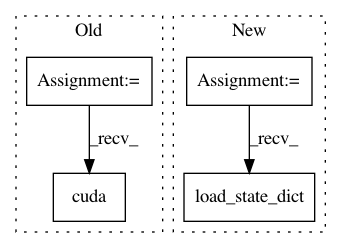

988ee51b15466231e9770f46dcb4d221866322a7,OpenNMT/onmt/Translator.py,Translator,__init__,#Translator#,7
Before Change
self.tt = torch.cuda if opt.cuda else torch
checkpoint = torch.load(opt.model)
self.model = checkpoint["model"]
self.model.eval()
if opt.cuda:
self.model.cuda()
else:
self.model.cpu()
self.src_dict = checkpoint["dicts"]["src"]
After Change
checkpoint = torch.load(opt.model)
model_opt = checkpoint["opt"]
self.src_dict = checkpoint["dicts"]["src"]
self.tgt_dict = checkpoint["dicts"]["tgt"]
encoder = onmt.Models.Encoder(model_opt, self.src_dict)
decoder = onmt.Models.Decoder(model_opt, self.tgt_dict)
model = onmt.Models.NMTModel(encoder, decoder)
generator = nn.Sequential(
nn.Linear(model_opt.rnn_size, self.tgt_dict.size()),
nn.LogSoftmax())
model.load_state_dict(checkpoint["model"])
generator.load_state_dict(checkpoint["generator"])
if opt.cuda:
model.cuda()
generator.cuda()
In pattern: SUPERPATTERN
Frequency: 3
Non-data size: 4
Instances
Project Name: pytorch/examples
Commit Name: 988ee51b15466231e9770f46dcb4d221866322a7
Time: 2017-03-14
Author: bryan.mccann.is@gmail.com
File Name: OpenNMT/onmt/Translator.py
Class Name: Translator
Method Name: __init__
Project Name: lcswillems/torch-rl
Commit Name: 3f196bcdd1e0310208e8978cf4f1fb590614568b
Time: 2018-04-15
Author: lcswillems@gmail.com
File Name: utils.py
Class Name:
Method Name: load_model
Project Name: kuangliu/pytorch-cifar
Commit Name: 7f162085eca07b86fb00afec8fc62b5fee836b7b
Time: 2018-04-25
Author: kuang.liu@hotmail.com
File Name: main.py
Class Name:
Method Name: